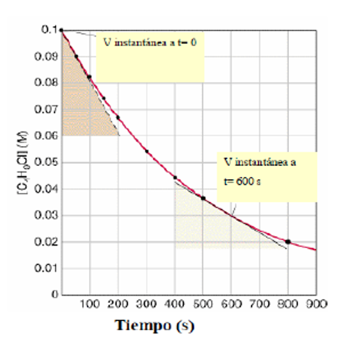
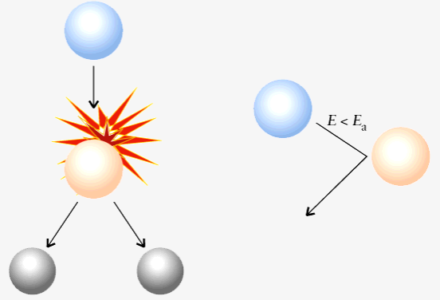
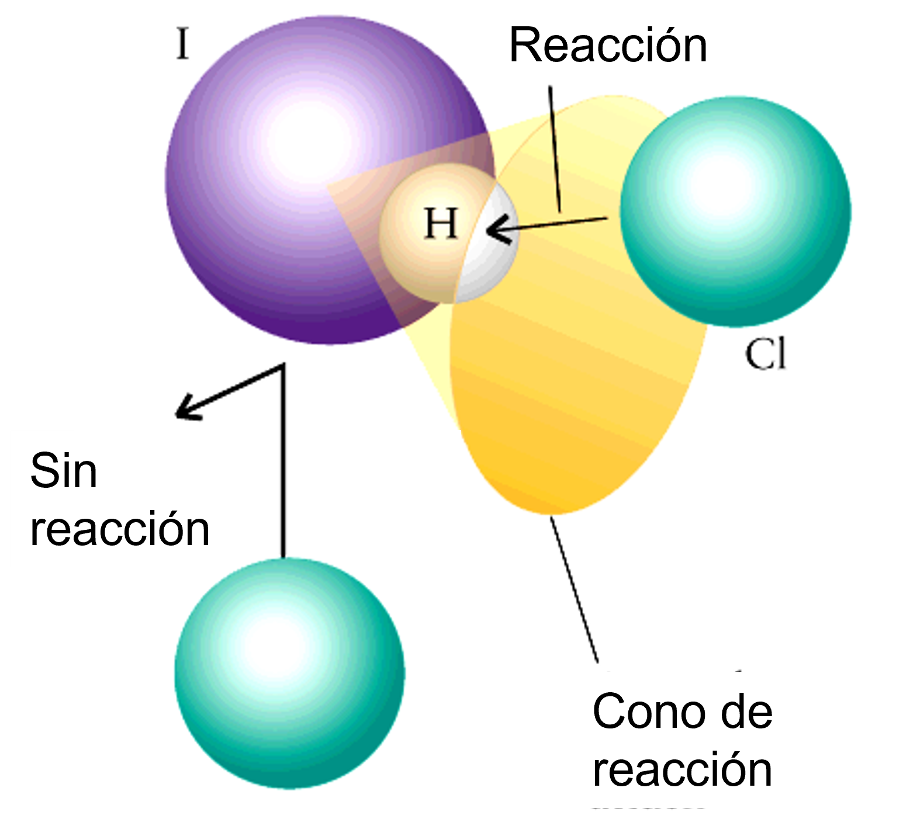
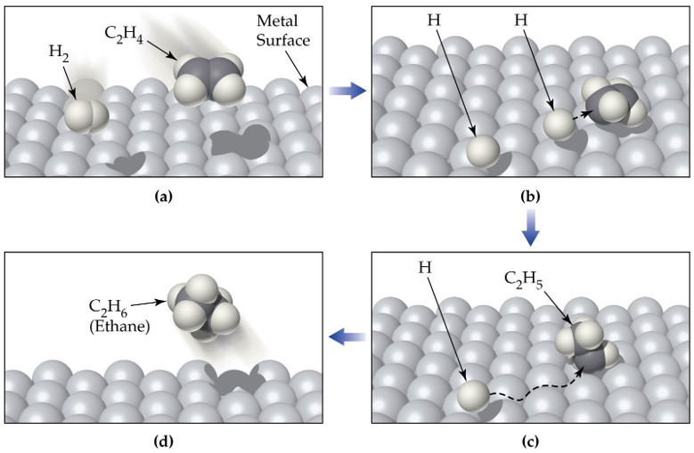
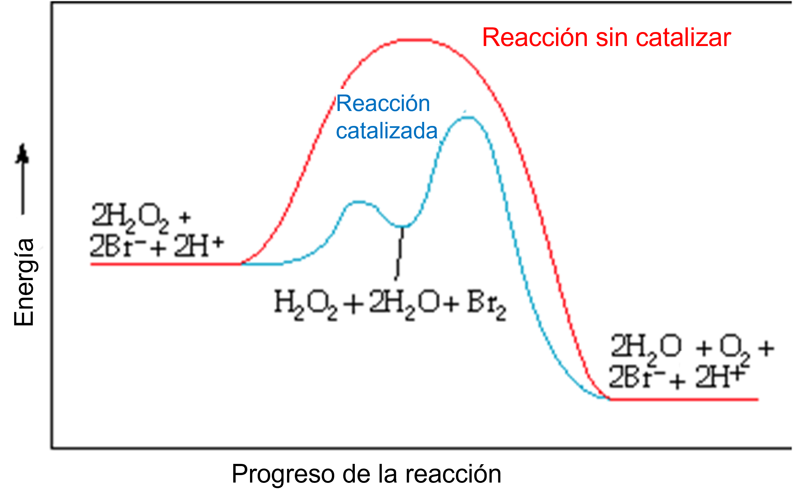

Diagnóstico y Optimización Cinética
Un Caso de Estudio en Remediación de Gases Industriales
Presentado por:
Alberto Albesa
Introducción Visual a la Velocidad de Reacción
Algunas reacciones son explosivamente rápidas, mientras que otras tardan una eternidad.
Combustión: Proceso Rápido
Oxidación: Proceso Lento
El Problema de la Fábrica y la Paradoja Cinética
Una planta industrial debe eliminar los contaminantes NO₂ y CO de sus emisiones. La reacción propuesta es:
NO₂(g) + CO(g) → NO(g) + CO₂(g)
La termodinámica nos dice que esta reacción es espontánea ($ \Delta G < 0 $), pero en la práctica, es demasiado lenta para ser útil.
Analogía: Al igual que un diamante ($C$) no se convierte espontáneamente en grafito, nuestra reacción necesita un "empujón". La Termodinámica nos dice si podemos llegar, la Cinética nos dice cómo y a qué velocidad.
Nuestro Plan de Acción
Como consultores, abordaremos el problema con un diagnóstico sistemático en 4 fases:
- Fase 1: Medir la velocidad actual y entender cómo depende de los reactivos. (Leyes de Velocidad)
- Fase 2: Evaluar el efecto de la temperatura como posible solución. (Energía de Activación)
- Fase 3: Investigar el "porqué" de la lentitud a nivel molecular. (Mecanismos de Reacción)
- Fase 4: Proponer la solución de ingeniería definitiva. (Catálisis)
Factores que Afectan la Velocidad de Reacción
Nuestro plan de acción se basa en analizar los factores clave que controlan la rapidez de una reacción:
-
1️⃣
Concentración de los Reactivos
¿Cómo influye la cantidad de cada reactivo?
-
2️⃣
Temperatura
¿Calentar o enfriar el sistema ayuda?
-
3️⃣
Presencia de un Catalizador
¿Podemos usar una sustancia para crear un "atajo"?
Fase 1: ¿Qué es la Velocidad de Reacción?
Es la medida del cambio en la concentración de un reactivo o producto a lo largo del tiempo. Para una reacción $A \rightarrow B$, la situación típica es la siguiente:
La velocidad cambia a medida que la reacción procede, ya que las concentraciones varían.
Cálculo de la Velocidad Media
Podemos calcular una velocidad media en un intervalo de tiempo ($\Delta t$). Por ejemplo, en los primeros 10 segundos, la concentración del reactivo A cambia de 1.00 M a 0.74 M.
El signo negativo se usa para que la velocidad de desaparición de un reactivo sea un valor positivo.
La Velocidad Cambia con el Tiempo
La velocidad media no es constante. Disminuye a medida que los reactivos se consumen. Consideremos la reacción:
C₄H₉Cl(aq) + H₂O(l) → C₄H₉OH(aq) + HCl(aq)
| Intervalo de Tiempo (s) | Velocidad Media (M/s) |
|---|---|
| 0 - 50 | 1.9 x 10-4 |
| 50 - 100 | 1.7 x 10-4 |
| 100 - 150 | 1.6 x 10-4 |
| 150 - 200 | 1.4 x 10-4 |
Esto nos obliga a buscar una medida más precisa: la velocidad instantánea.
Definición Formal: Velocidad Instantánea
Para un análisis preciso, usamos la velocidad instantánea, que es la pendiente de la recta tangente a la curva de concentración en un tiempo `t`.
Para una reacción general: aA + bB → cC + dD, se define como:
La Ley de Velocidad
Experimentalmente, la velocidad se relaciona con la concentración de los reactivos mediante la Ley de Velocidad:
- k: La constante de velocidad (depende de T).
- m, n: Los órdenes de reacción respecto a A y B.
- m + n: El orden total de la reacción.
- Importante: Los órdenes DEBEN determinarse experimentalmente.
Órdenes vs. Coeficientes Estequiométricos
¡Un error común es asumir que los órdenes de reacción son los coeficientes estequiométricos!
Consideremos dos reacciones aparentemente similares:
H₂(g) + I₂(g) → 2HI(g)
Ley experimental: v = k[H₂][I₂] (Los órdenes coinciden)
H₂(g) + Br₂(g) → 2HBr(g)
Ley experimental: v = k[H₂][Br₂]1/2 (Los órdenes NO coinciden)
Conclusión: La ley de velocidad solo puede conocerse a través del experimento.
Leyes de Velocidad Integradas
Al integrar la ley de velocidad, obtenemos ecuaciones que relacionan la concentración con el tiempo. Cada orden tiene una gráfica lineal característica:
Orden Cero
[A] = [A]₀ - kt
Linealiza: [A] vs. t
Orden Uno
ln[A] = ln[A]₀ - kt
Linealiza: ln[A] vs. t
Orden Dos
1/[A] = 1/[A]₀ + kt
Linealiza: 1/[A] vs. t
Leyes Integradas: Orden Cero
Para una reacción de orden cero, la velocidad es constante e independiente de la concentración del reactivo.
- d[A] / dt = k
Separando variables e integrando desde el tiempo $t=0$ (con concentración $[A]_0$) hasta un tiempo $t$ (con concentración $[A]$):
∫ d[A] = -k ∫ dt
Obtenemos la ecuación de la recta:
Vida Media para Orden Cero
El tiempo de vida media ($t_{1/2}$) es el tiempo necesario para que la concentración del reactivo se reduzca a la mitad de su valor inicial, es decir, $[A] = [A]_0 / 2$.
Sustituyendo en la ley integrada:
[A]₀ / 2 = [A]₀ - k * t₁/₂
Despejando $t_{1/2}$:
Nota: Para una reacción de orden cero, la vida media depende de la concentración inicial y se acorta a medida que avanza la reacción.
Vida Media para Orden Uno
Sustituyendo $[A] = [A]_0 / 2$ en la ley integrada:
ln([A]₀/2) = ln[A]₀ - k*t₁/₂
ln[A]₀ - ln(2) = ln[A]₀ - k*t₁/₂
Obtenemos la fórmula, que es **independiente** de la concentración inicial:
Leyes Integradas: Orden Dos
Para una reacción de segundo orden, la velocidad es proporcional al cuadrado de la concentración del reactivo.
- d[A] / dt = k[A]²
Separando variables e integrando:
∫ (1/[A]²) d[A] = -k ∫ dt
Obtenemos la ecuación linealizada:
Vida Media para Orden Dos
Sustituyendo $[A] = [A]_0 / 2$:
1/([A]₀/2) = 1/[A]₀ + k*t₁/₂
2/[A]₀ = 1/[A]₀ + k*t₁/₂
Obtenemos la fórmula:
Nota: La vida media depende inversamente de la concentración inicial.
Determinación Gráfica del Orden
Un método poderoso para determinar el orden es graficar los datos experimentales de [Concentración] vs. Tiempo de tres maneras diferentes:
- Si el gráfico de [A] vs. t es una línea recta → Orden Cero.
- Si el gráfico de ln[A] vs. t es una línea recta → Orden Uno.
- Si el gráfico de 1/[A] vs. t es una línea recta → Orden Dos.
Este método gráfico complementa al método de las velocidades iniciales que usaremos para nuestro caso de estudio.
Método de las Velocidades Iniciales
Este método consiste en comparar la velocidad inicial de la reacción bajo diferentes concentraciones iniciales de los reactivos.
Al tomar la razón de las leyes de velocidad de dos experimentos, podemos despejar el orden de un reactivo mientras el otro se mantiene constante:
Si $[B]_1 = [B]_2$, la ecuación se simplifica a:
Ahora estamos listos para aplicar esto a los datos de la fábrica.
Aplicación a la Fábrica: Determinación Experimental
Solicitamos datos al laboratorio para nuestra reacción NO₂ + CO. ¡Ayúdenos a analizarlos!
| Experimento | [NO₂]₀ (M) | [CO]₀ (M) | Velocidad inicial (M/s) |
|---|---|---|---|
| 1 | 0.10 | 0.10 | 5.0 x 10-3 |
| 2 | 0.20 | 0.10 | 20.0 x 10-3 |
| 3 | 0.20 | 0.20 | 20.0 x 10-3 |
Conclusiones de la Fase 1
Nuestro primer diagnóstico es claro y nos permite hacer dos recomendaciones cruciales a la fábrica:
1. La velocidad es independiente de la concentración de CO. Aumentar su flujo es un desperdicio de recursos.
2. La velocidad depende fuertemente (al cuadrado) de la concentración de NO₂. La optimización debe centrarse en este reactivo.
Fase 2: La Teoría de las Colisiones
Para que una reacción ocurra, las moléculas deben chocar. Aumente la temperatura para ver cómo se mueven más rápido.
La Paradoja de la Colisión
A nivel molecular, las colisiones son increíblemente frecuentes. Para la reacción 2HI → H₂ + I₂, se calculan unas 6 x 10³¹ colisiones por mililitro cada segundo.
Sin embargo, la velocidad de reacción observada es mucho menor, equivalente a solo 2 x 10¹⁴ moléculas reaccionando en el mismo tiempo.
¡Solo 1 de cada 1017 colisiones es efectiva!
¿Por qué?
Condiciones para una Colisión Efectiva
Una colisión solo produce una reacción si cumple dos condiciones:
1. Energía Suficiente
La energía de la colisión debe superar la barrera de activación ($E_a$).
2. Orientación Adecuada
Las moléculas deben chocar con la geometría correcta (el "cono de reacción").
La Energía de Activación (Ea)
Es la energía mínima necesaria para que los reactivos se transformen en el complejo activado o estado de transición, una especie inestable en la cima de la barrera energética.
Perfiles de Reacción: Endo vs. Exotérmica
La energía de activación es siempre una barrera a superar, independientemente de si la reacción libera o absorbe energía en total ($\Delta H$).
La Ecuación de Arrhenius
Svante Arrhenius cuantificó la relación entre la constante de velocidad (k), la temperatura (T) y la energía de activación (Ea).
Fracción de Moléculas Efectivas (e-Ea/RT):
Determinación Gráfica de Ea
La ecuación de Arrhenius se puede linealizar aplicando logaritmos neperianos:
ln(k) = - (Ea/R) * (1/T) + ln(A)
Esto tiene la forma de una recta ($y = mx + b$). Al graficar $ln(k)$ frente a $1/T$ para una serie de experimentos a diferentes temperaturas, obtenemos una línea recta.
La pendiente de la recta es igual a -Ea/R, lo que nos permite calcular la energía de activación.
Conclusiones de la Fase 2
Hemos entendido el rol de la temperatura y la barrera energética.
Aumentar la temperatura es una opción para acelerar el proceso de la fábrica, pero probablemente no sea la más eficiente ni económica. Debemos investigar a un nivel más profundo para encontrar una solución superior.
Fase 3: Mecanismo y Leyes de Velocidad
La ley de velocidad está determinada por el mecanismo de reacción, no por la estequiometría global. Consideremos una reacción compleja:
Reacción Global: 3A + 2B → C + D
Paso 1: A + B → E + F (Lento)
Paso 2: A + E → H (Rápido)
Paso 3: A + F → G (Rápido)
Paso 4: H + G + B → C + D (Rápido)
Como el Paso 1 es el más lento (el cuello de botella), la ley de velocidad será: v = k[A][B]
Etapas Elementales y Molecularidad
La molecularidad es el número de moléculas de reactivo que intervienen en un proceso elemental. Es un concepto teórico que se aplica a un único paso de reacción.
Proceso Unimolecular
Una sola molécula se reordena o descompone. Ejemplo: $O_3^* \rightarrow O_2 + O$.
La ley de velocidad para este paso es de primer orden: $v = k[O_3^*]$.
Proceso Bimolecular
Dos moléculas chocan para reaccionar. Ejemplo: $NO + O_3 \rightarrow NO_2 + O_2$.
La ley de velocidad para este paso es de segundo orden: $v = k[NO][O_3]$.
Proceso Termolecular
Tres partículas chocan simultáneamente. Es un evento muy poco probable. Ejemplo: $O + O + M \rightarrow O_2 + M$.
La ley de velocidad para este paso es de tercer orden: $v = k[O]^2[M]$.
Para una etapa elemental, y solo para una etapa elemental, la molecularidad coincide con el orden de reacción.
La Etapa Determinante de la Velocidad (RDS)
En un mecanismo de varios pasos, siempre hay una etapa que es mucho más lenta que las demás. Esta es la etapa determinante de la velocidad o "cuello de botella".
La ley de velocidad de la reacción global es la ley de velocidad de esta etapa lenta.
Galería de Mecanismos de Reacción
Explora los mecanismos de las reacciones del documento. Haz clic en "Revelar Mecanismo" para ver cada paso elemental.
Descomposición de N₂O₅
Reacción Global: 2N₂O₅ → 4NO₂ + O₂
Paso 1: N₂O₅ → NO₂ + NO₃
Paso 2: NO₂ + NO₃ → NO₂ + O₂ + NO
Paso 3: NO + NO₃ → 2NO₂
Descomposición de N₂O
Reacción Global: 2N₂O → 2N₂ + O₂
Paso 1: N₂O → N₂ + O
Paso 2: N₂O + O → N₂ + O₂
Mecanismo Propuesto para la Reacción de la Fábrica
Basado en la ley de velocidad experimental ($v = k[NO_2]^2$), podemos proponer un mecanismo de dos pasos:
- Paso 1 (Lento): NO₂(g) + NO₂(g) → NO₃(g) + NO(g)
- Paso 2 (Rápido): NO₃(g) + CO(g) → NO₂(g) + CO₂(g)
Como el primer paso es el lento (el cuello de botella), su ley de velocidad ($v = k[NO_2]^2$) determina la ley de velocidad global, lo que coincide perfectamente con nuestros hallazgos experimentales.
El Cuello de Botella de la Reacción
En un mecanismo de varios pasos, la reacción global no puede ser más rápida que su paso más lento. Este paso, conocido como la etapa determinante de la velocidad, tiene la barrera de energía (energía de activación) más alta.
Funciona como un cuello de botella: no importa cuán rápido sean los otros pasos, la velocidad general está limitada por la etapa más lenta. Observa en la simulación cómo la primera barrera, más alta, controla el flujo de reactivos a productos.
Conclusiones de la Fase 3
¡Hemos descifrado el misterio a nivel molecular!
El verdadero cuello de botella de la reacción de la fábrica es la colisión inicial entre dos moléculas de NO₂. El CO solo entra en juego en una etapa posterior y rápida. Ahora podemos diseñar una solución inteligente.
Fase 4: El Principio de la Catálisis
Un catalizador es una sustancia que cambia la velocidad de una reacción sin ser consumida. Lo logra proporcionando una ruta de reacción alternativa con una energía de activación diferente.
- Propiedades: Se recuperan al final, bastan pequeñas cantidades.
- Catálisis Positiva: Acelera la reacción (Ea más baja). Es la más común.
- Catálisis Negativa (Inhibición): Retarda la reacción (Ea más alta).
Catálisis Heterogénea: Reactivos en Fases Distintas
Los reactivos (gases) se adsorben en la superficie de un catalizador (sólido), reaccionan y luego se desorben como productos. Es la base de los convertidores catalíticos.
Catálisis Homogénea: Reactivos en la Misma Fase
El catalizador y los reactivos están en la misma fase (ej. todos en disolución). La reacción procede a través de un intermediario, abriendo una nueva ruta con barreras más bajas.
Recomendación Final y Ventajas
Nuestra recomendación final para la fábrica es el diseño e implementación de un reactor catalítico heterogéneo.
Esta solución permitirá al proceso operar a temperaturas mucho más bajas, logrando una velocidad de conversión superior. Las ventajas son claras:
- Mayor eficiencia de conversión.
- Menor coste energético.
- Cumplimiento de las normativas medioambientales.
Resumen del Viaje del Consultor
Hemos transformado un problema industrial en una solución de ingeniería a través de la ciencia:
- Problema: Una reacción lenta e ineficiente.
- Fase 1: Descubrimos qué reactivo era importante con la Ley de Velocidad.
- Fase 2: Evaluamos el efecto de la temperatura con la Ecuación de Arrhenius.
- Fase 3: Entendimos el porqué de la lentitud con el Mecanismo de Reacción.
- Fase 4: Diseñamos la solución óptima con la Catálisis.
La Cinética Química como Herramienta Esencial
Controlar la velocidad de las reacciones no es solo un ejercicio académico. Es la clave para desarrollar procesos industriales sostenibles, crear nuevos medicamentos, proteger nuestro medio ambiente y entender la maquinaria de la vida misma.
Gracias por su atención.